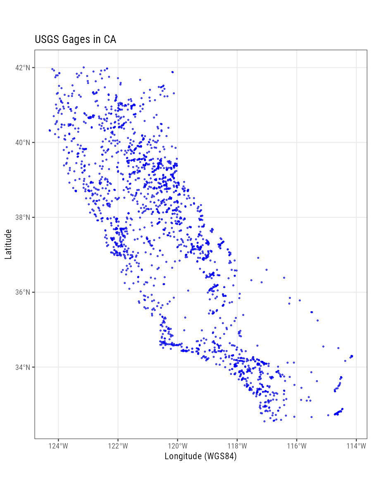

Working with kml Files
kml files are the unzipped versions of kmz files. You can use the sf package to read kml’s. You’ll want to unzip with any sort of zip package you have on your computer (Keka, 7zip, etc.). Data used in this example live in the github repo here.
suppressPackageStartupMessages({
library(ggplot2)
library(dplyr)
library(sf);
library(stringi)
})
# https://waterwatch.usgs.gov/?m=stategage
# check layers first:
st_layers("data/streamgages_06.kml")## Driver: KML
## Available layers:
## layer_name geometry_type features fields
## 1 USGS streamgages 3D Point 2239 2## Reading layer `USGS streamgages ' from data source `/Users/ryanpeek/Documents/github/teaching/mapping-in-R-workshop/data/streamgages_06.kml' using driver `KML'
## Simple feature collection with 2239 features and 2 fields
## geometry type: POINT
## dimension: XYZ
## bbox: xmin: -124.2942 ymin: 32.55172 xmax: -114.1402 ymax: 42.00429
## epsg (SRID): 4326
## proj4string: +proj=longlat +datum=WGS84 +no_defsA Basic ggplot
Here we can make a basic ggplot with no specific background to our spatial data. We can still sort of make out an outline of California, but it would be nice to add some more details.
# simple map
ggplot() +
labs(x="Longitude (WGS84)", y="Latitude",
title="USGS Gages in CA") +
geom_sf(data=gages, col="blue", lwd=0.4, pch=21) +
theme_bw()
Add a Map Details/Background
Now we can add a few additional details here. Let’s use the USAboundaries package go get a county layer, and the ggspatial package to add a scale bar, north arrow, and open source map background. Note, we could also just throw this sf layer into mapview (see the mapview page) and have an interactive map.
First let’s get the county layer:
# now with background
library(ggspatial)
library(USAboundaries)
library(purrr)
counties <- us_counties(resolution = "high", states="CA")Next we use the ggspatial package to add background (change the zoom= to a different value to change level of detail, but beware higher values take longer to download) using the annotation_map_tile function. Then add annotation_scale and annotation_north_arrow options to make the map look complete!
# water color version
ggplot() +
annotation_map_tile(zoom = 8) + # this can take a few seconds
geom_sf(data=counties, fill=NA, col="gray50", alpha=0.7) +
scale_color_viridis_d() +
labs(x="Longitude (WGS84)", y="Latitude",
title="Selected USGS Gages with American, Deer, or Bear In Name") +
geom_sf(data=gages_FILTER, fill="dodgerblue", alpha=0.9, pch=21, size=2) +
# spatial-aware automagic scale bar
annotation_scale(location = "bl",style = "ticks") +
theme_bw() +
# spatial-aware automagic north arrow
annotation_north_arrow(width = unit(.3,"in"),
pad_y = unit(.3, "in"),location = "bl",
which_north = "true")